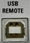

USB REMOTE Connector
 |
USB REMOTE is a USB connector of type B (instrument acts as device) for remote control of the instrument.
The USB connector complies with standard USB 2.0.
See also "Remote Control Operation"
 |
USB REMOTE is a USB connector of type B (instrument acts as device) for remote control of the instrument.
The USB connector complies with standard USB 2.0.
See also "Remote Control Operation"